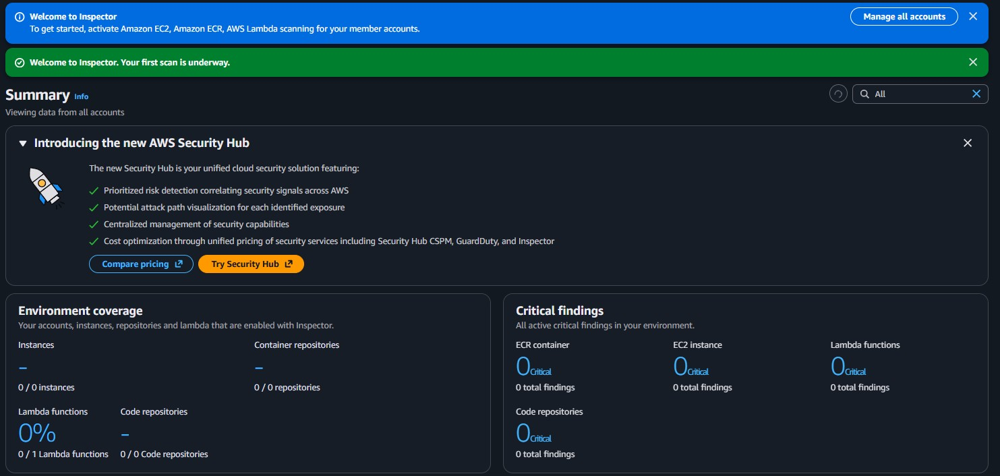
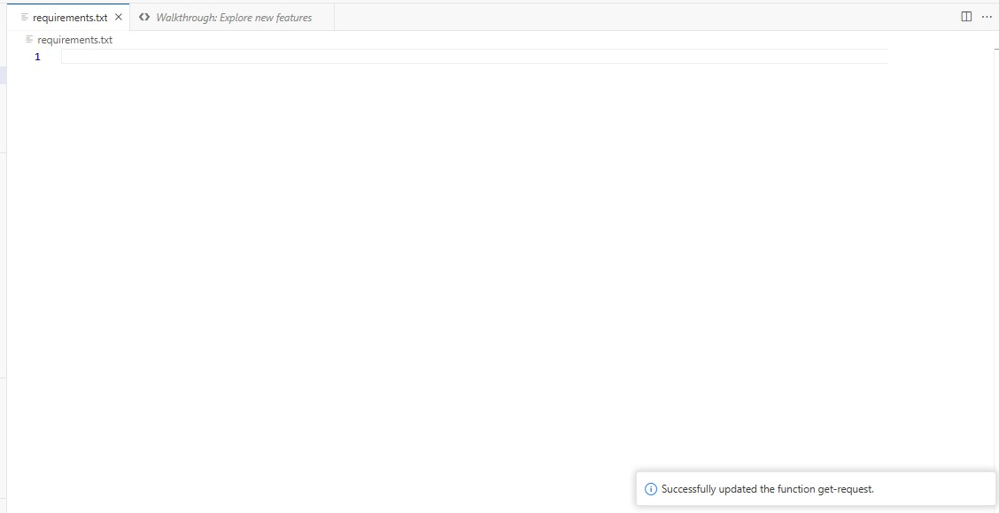
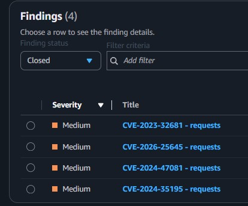
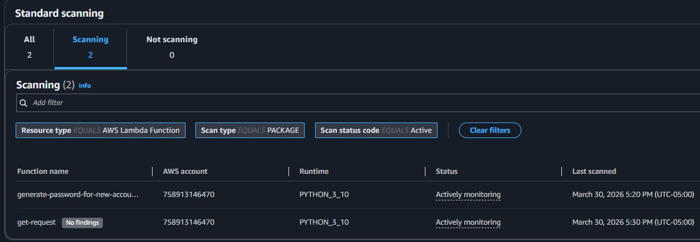

Vulnerability Analysis
Utilized the Amazon Inspector dashboard to review scanned resources and identified the specific root cause of a medium-severity vulnerability within the Lambda function.
This lab utilizes Amazon Inspector to scan AWS resources, specifically AWS Lambda functions. Discover how to activate Amazon Inspector, interpret vulnerability reports, and successfully remediate findings.
Activated Amazon Inspector to assess the security posture of an AWS environment. Identified a critical outdated package vulnerability inside an AWS Lambda function, remediated the issue by modifying the package version dependencies, and confirmed that the vulnerability was successfully closed.
Utilized the Amazon Inspector dashboard to review scanned resources and identified the specific root cause of a medium-severity vulnerability within the Lambda function.
Updated the required function dependencies, which automatically triggered a new scan by Inspector to close the vulnerability finding without manual intervention.
Detailed documentation of the assessment and remediation process using Amazon Inspector.

CVE-2023-32681 - requests affecting the get-request Lambda function.requests Python package was outdated and recommended for an upgrade.requirements.txt file by removing the specific version constraint (==2.20.0) from the requests package to enforce the use of the latest version.
CVE-2023-32681 - requests was moved to the Closed status.

requirements.txt.This lab demonstrated the effectiveness of automated vulnerability scanning natively integrated within AWS through Amazon Inspector. By automatically assessing the environment, the service swiftly flags deeply nested dependency issues like outdated packages in Lambda functions without manual intervention.
The remediation process was equally streamlined. By updating the package constraints and simply redeploying the function, a subsequent automated scan validated the fix and closed the finding, ensuring a continuous and secure development lifecycle.